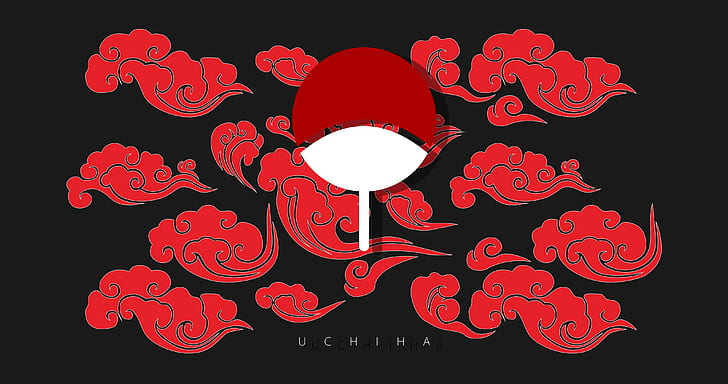

The Uchiha Clan was one of the four noble clans of Konohagakure, also known as the Hidden Leaf Village. They were widely recognized as one of the strongest clans in the ninja world because of their powerful chakra, exceptional combat abilities, and the unique Sharingan eye.
The clan descended from Indra Otsutsuki, the elder son of Hagoromo Otsutsuki, the Sage of Six Paths. Because of this lineage, the Uchiha inherited strong spiritual energy and exceptional visual powers.
Throughout history, the Uchiha Clan played a crucial role in shaping the ninja world. They helped establish the Hidden Leaf Village, produced many legendary shinobi, and influenced major events throughout the Naruto series.
The clan's symbol is a fan, representing the fan used to control and strengthen flames, which reflects the clan's mastery of Fire Release techniques.
⏫